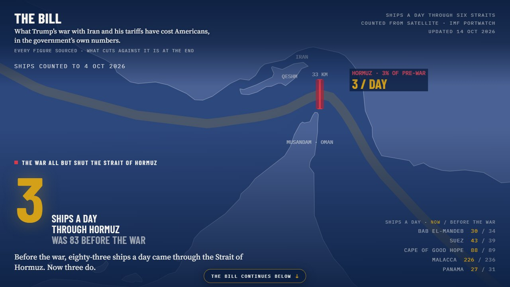
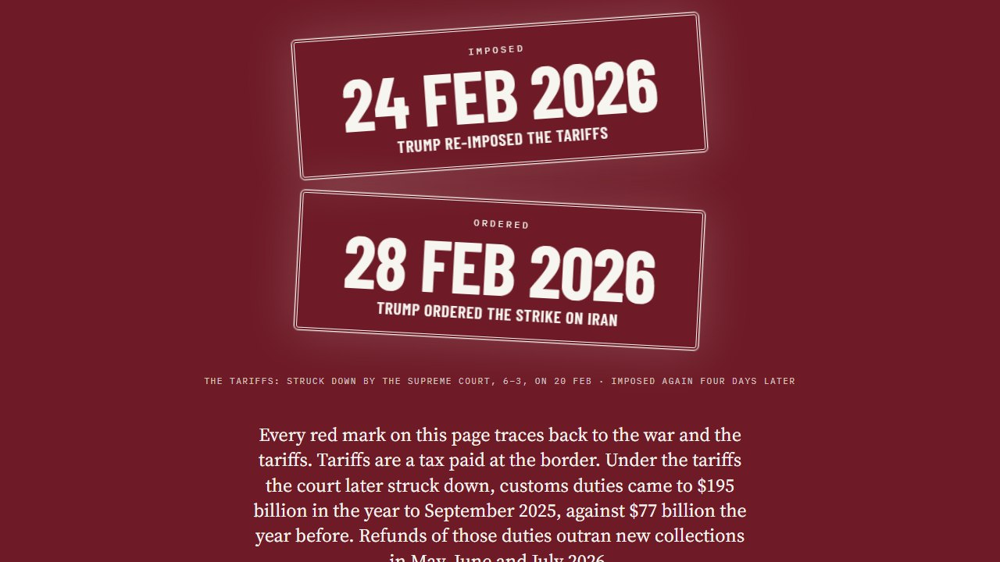
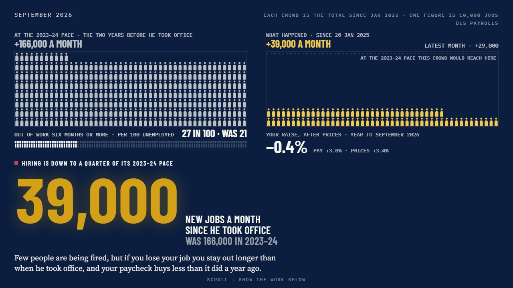
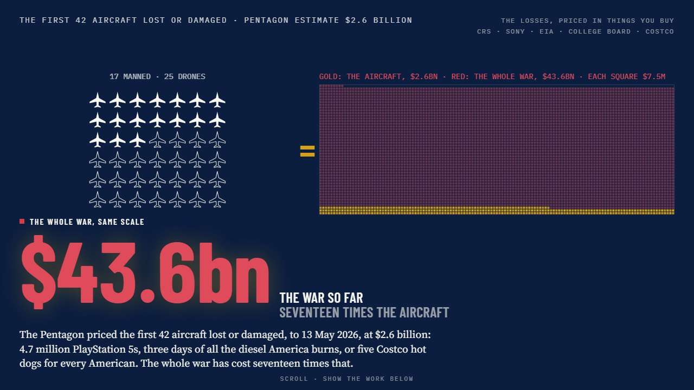
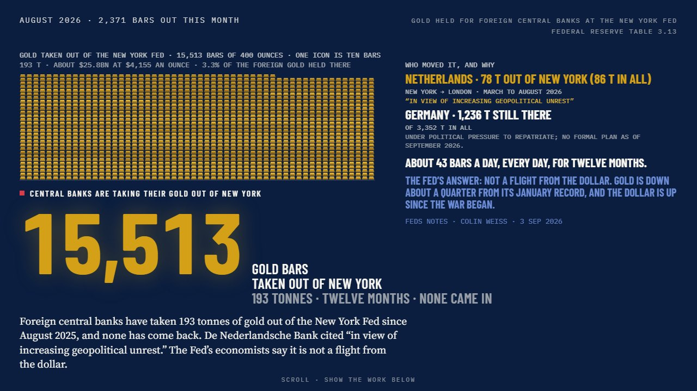
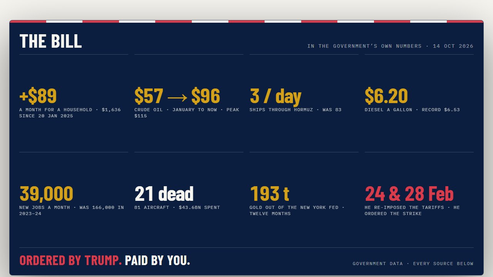

What it is
A scroll-driven data story in eleven blocks. It traces costs to two dated decisions, the tariffs re-imposed on 24 February 2026 and the strike on Iran on 28 February, and never adds war effects and tariff effects together. Each block plays once as it comes into view, then holds still.
03 · The strait
One ship on screen for each ship a day
The real traffic separation scheme on a Natural Earth coastline. Eighty-three ships a day crossed the Strait of Hormuz before the war; the satellite count to 4 October 2026 is three. The President's "thirty a night" is drawn beside it and labelled as a claim.
02 · Oil
Every daily close of 2026, on a seismograph
Every daily WTI close of the year drawn as it moves: January, the April peak, and now. The page draws WTI spot only, because Brent spot and Brent futures are different instruments, and says so.
04 · Your prices
Fourteen prices on a split-flap board
January 2025 against the latest month. Pick your state and the fuel and electricity rows re-total. The prices that fell are on the board too.
06 · What the war cost
Costs, with the disputes printed beside them
US service members killed by the Pentagon's own count, aircraft lost or damaged by the CRS count, what the Pentagon says it has spent beside the CBO's lower estimate, and an interceptor count the Defense Secretary disputes, shown next to the dispute.
The rest of the page






Rules it follows
Zero fabrication
Every number comes from a government series or from a curated entry with a source, a URL, a tier and a date. Missing data says so, and gaps render as gaps.
No moving figure is typed
Any sentence that states a verdict about a number the next release can change is built from the data at render time, along with each "as of" date.
What cuts against it is shown
Stocks are up, almost nobody is being laid off, core CPI runs below the headline. A row drops out only when it stops being true.
How it was made
A Python backend pulls the public data (FRED, EIA, Treasury Fiscal Data, IMF PortWatch) and freezes it into one snapshot. A validation gate stops the deploy if any block is missing, errored or stale. The front end is React 19 and Vite, fully static, with no server at runtime.
The page is a port of a design prototype made in Claude Design. A script converts the prototype's markup to JSX mechanically, so copy and styling never drift by hand. The share card is rendered from the real block 09, and the screenshots and clips in the repo are stepped on a fake clock so every frame is evenly spaced.
The clips on this page were recorded by script against the live site. Refresh is on demand, after something that moves the numbers, and every refresh appends the headline figures to a history file in the repo.
PythonFastAPIReact 19D3ViteCloudflare Pages
Data and credits
| What | Source | Licence |
|---|---|---|
| Daily ship counts through six straits | IMF PortWatch | Per IMF terms |
| Crude, fuel, jobs, CPI and fiscal series | EIA, FRED, BLS, BEA, Treasury, CBO | US government data, public domain |
| Military costs and aircraft counts | Congressional Research Service, CBO | US government publications, public domain |
| Euro-area comparison series | Eurostat / ECB | Free reuse per agency terms |
| Energy figures cited on the page | IEA | Cited with attribution, per IEA terms |
| Coastlines | Natural Earth | Public domain |
| Reported figures marked Tier 2 in the repo | Roll Call, Lloyd's List Intelligence, Axios, CNBC and others | Cited with attribution, not redistributed |
| Type: Barlow Condensed, IBM Plex Mono, Source Serif 4 | Google Fonts | SIL Open Font Licence |
Code is MIT. Known limits are listed in the README; the thesis and every source are in docs/THESIS.md.